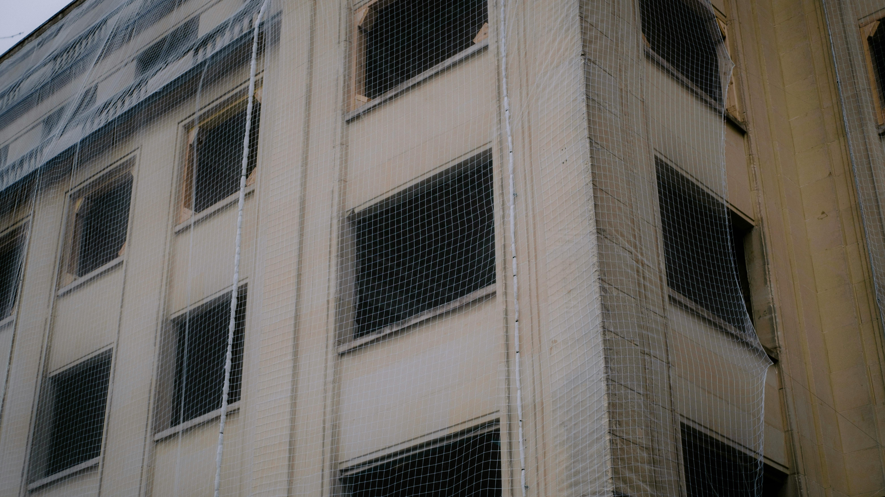

Looking for industrial safety nets in Indiranagar Bangalore? We provide high-quality safety net installation for factories, warehouses, construction sites, apartments, homes, and commercial buildings. Our services also include balcony safety nets, pigeon nets, cricket nets, invisible grills, and duct area nets in Indiranagar and nearby areas.

SSDJ Safety Nets offers industrial safety nets in Indiranagar Bangalore for factories, warehouses, construction sites, apartments, homes, and commercial buildings. Our high-strength safety net installation services help prevent accidents, reduce hazards, and ensure complete safety for workers, residents, and surrounding areas. In addition to industrial nets, we provide balcony safety nets, pigeon nets, cricket nets, invisible grills, and duct area nets across Indiranagar and nearby areas.
Designed for durability and performance, our nets ensure protection for workers, residents, machinery, and infrastructure while maintaining safety compliance in Indiranagar Bangalore. These high-strength safety nets help reduce risks, prevent accidental falls, and improve overall safety standards. Ideal for factories, warehouses, construction sites, apartments, and homes, our nets provide reliable and long-lasting protection in demanding environments. We also offer balcony safety nets, pigeon nets, cricket nets, invisible grills, and duct area nets across Indiranagar and nearby areas.
Our industrial safety nets in Bangalore create a safer work environment by minimizing risks in factories, warehouses, and construction sites.
Designed to stop falling objects and reduce industrial hazards, our safety net installation helps prevent serious workplace accidents.
We use high-strength, UV-resistant materials for long-lasting industrial safety nets suitable for tough environments.
Our experienced team provides quick and secure industrial net installation services in Bangalore with minimal disruption to your operations.
Fill out the form to book a free site inspection for industrial safety nets in Bangalore. Our experts will visit your factory, warehouse, or construction site to analyze your requirements and provide the best industrial safety net installation solution.